토목기사 (2012-03-04 기출문제)
1과목: 응용역학
1. 그림과 같은 정정 트러스에서 D1부재(AC)의 부재역은?
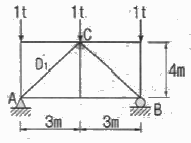
- 0.625t(인장력)
- 0.625t(압축력)
- 0.75t(인장력)
- 0.75t(압축력)
(정답률: 79%)

2. 기둥의 길이가 3.5m이고 단면이 10cm x 15cm 인 직사각형이라면 이 기둥의 세장비는?
- 80.83
- 121.23
- 142.96
- 165.47
(정답률: 78%)
3. 그림과 같이 두 개의 활차를 사용하여 물체를 매달 때 3개의 물체가 평형을 이루기 위한 각 θ값은? (단, 로프와 활차의 마찰은 무시한다.)
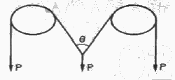
- 30˚
- 45˚
- 60˚
- 120˚
(정답률: 80%)
4. 그림과 같이 단순보 위에 삼각형 분포하중이 작용하고 있다. 이 단순보에 작용하는 최대 휨모멘트는?
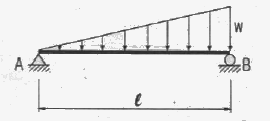
- 0.03214 wℓ2
- 0.04816 wℓ2
- 0.⑤217 wℓ2
- 0.06415 wℓ2
(정답률: 56%)
5. 그림과 같은 트러스의 C점에 300kg의 하중이 작용할 때 C점에서의 처짐을 계산하면? ( 단, E=2×106kg/cm2, 단면적 1cm2)
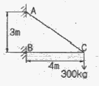
- 0.158cm
- 0.315cm
- 0.473cm
- 0.630cm
(정답률: 71%)
6. 다음 그림과 같은 변단면 Cantilever 보 A점의 처짐을 구하면?
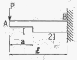
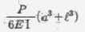
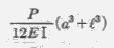
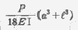
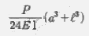
(정답률: 57%)
7. 아래 그림과 같은 캔틸레버 보에서 B점의 연직변위(δB)는? (단, M0=0.4tㆍm, P=1.6t, L=2.4m, EI=600tㆍm2이다. )
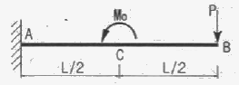
- 1.08cm(↓)
- 1.08cm(↑)
- 1.37cm(↓)
- 1.37cm(↑)
(정답률: 71%)
8. 단면의 성질에 대한 다음 설명 중 잘못된 것은?
- 단면2차 모멘트의 값은 항상 0보다 크다.
- 단면2차 극모멘트의 값은 항상 극을 원점으로 하는 두 직교좌표축에 대한 단면2차 모멘트의 합과 같다.
- 도심축에 관한 단면1차 모멘트의 값은 항상 0이다.
- 단면 상승 모멘트의 값은 항상 0보다 크거나 같다.
(정답률: 66%)
9. 다음 구조물에서 하중이 작용하는 위치에서 일어나는 처짐의 크기는?
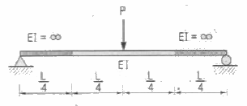
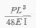
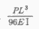
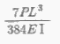
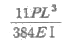
(정답률: 73%)
10. 그림과 같이 X, Y축에 대칭인 빗금친 단면에 비틀림우력 5tㆍm가 작용할 때 최대전단응력은?
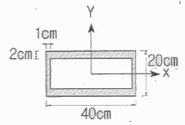
- 356.1kg/cm2
- 435.5kg/cm2
- 524.3kg/cm2
- 602.7kg/cm2
(정답률: 63%)
11. 다음 그림(A)와 같이 하중을 받기전에 지점 B와 보사이에 △의 간격이 있는 보가 있다. 그림(B)와 같이 이보에 등분포하중 q를 작용시켰을 때 지점 B의 반력이 qℓ이 되게 하려면 △의 크기를 얼마로 하여야 하는가? (단, 보의 휨강도 EI는 일정하다.)
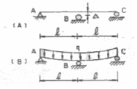
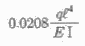
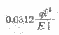
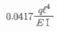
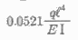
(정답률: 67%)
12. 다음 그림과 같이 2경간 연속보의 첫 경간에 등분포하중이 작용한다. 중앙지점 B의 휨모멘트는?
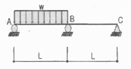
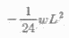
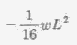
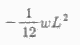
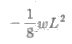
(정답률: 59%)
13. 평면응력을 받는 요소가 다음과 같이 응력을 받고 있다. 최대 주응력은?
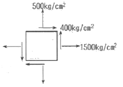
- 640kg/cm2
- 1640kg/cm2
- 360kg/cm2
- 1360kg/cm2
(정답률: 71%)
14. 직경 50mm, 길이 2m의 봉이 힘을 받아 길이가 2mm늘어났다면, 이 때 이 봉의 직경은 얼마나 줄어드는가? (단, 이 봉의 포아송(Poisson＇s)비는 0.3이다.)
- 0.015mm
- 0.030mm
- 0.045mm
- 0.060mm
(정답률: 72%)
15. 그림과 같은 라멘에서 A점의 수직반력(RA)은?
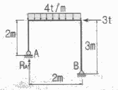
- 6.5t
- 7.5t
- 8.5t
- 9.5t
(정답률: 67%)
16. 다음 그림과 같은 내민보에서 C점의 처짐은? (단, 전 구간의 EI=3.0×109kg ㆍ cm2)
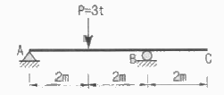
- 0.1cm
- 0.2cm
- 1cm
- 2cm
(정답률: 58%)
17. 그림과 같이 2개의 집중하중이 단순보 위를 통과할 때 절대최대 휨모멘트의 크기와 발생위치 x는?
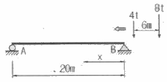
- Mmax=36.2tㆍm, x=8m
- Mmax=38.2tㆍm, x=8m
- Mmax=48.6tㆍm, x=9m
- Mmax=50.6tㆍm, x=9m
(정답률: 80%)
18. 동일한 재료 및 단면을 사용한 다음 기둥 중 좌굴하중이 가장 큰 기둥은?
- 양단 고정의 길이가 2L인 기둥
- 양단 힌지의 길이가 L인 기둥
- 일단 자유 타단 고정의 길이가 0.5L인 기둥
- 일단 힌지 타단 고정의 길이가 1.2L인 기둥
(정답률: 72%)
19. 그림과 같은 도형에서 빗금친 부분에 대한 x, y축의 단면 상승모멘트(Ixy)는?
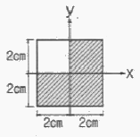
- 2cm4
- 4cm4
- 8cm4
- 16cm4
(정답률: 70%)
20. 그림과 같이 속이 빈 직사각형 단면의 최대 전단 응력은? (단, 전단력은 2t)
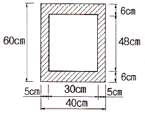
- 2.125kg/cm2
- 3.22kg/cm2
- 4.125kg/cm2
- 4.22kg/cm2
(정답률: 64%)
2과목: 측량학
21. UTM 좌표(universal transverse mercatorcoordinates)에 대한 설명으로 옳은 것은?
- 적도를 횡축, 자오선을 종축으로 한다.
- 좌표계의 세로 간격(zone)은 경도 3˚ 간격이다.
- 종 좌표(N)의 원점은 위도 38˚ 이다.
- 축척은 중앙자오선에서 멀어짐에 따라 작아진다.
(정답률: 52%)
22. 비행고도 2500m, 초점거리 150mm의 사진기로 촬영한 수직사진에서 비고 60m의 산정이 주점으로부터 5.0cm인 곳에 찍혀 있을 때 비고에 의한 기본변위는?
- 1.8mm
- 1.5mm
- 1.2mm
- 0.9mm
(정답률: 50%)
23. 수평각관측법 중 가장 정확한 값을 얻을 수 있는 방법으로 1등 삼각측량에 이용되는 방법은?
- 조합각관측법
- 방향각법
- 배각법
- 단각법
(정답률: 70%)
24. 일반적으로 단열삼각망으로 구성하기에 가장 적합한 것은?
- 시가지와 같이 정밀을 요하는 골조측량
- 복잡한 지형의 골조측량
- 광대한 지역의 지형측량
- 하천조사를 위한 골조측량
(정답률: 64%)
25. 완화곡선의 성질에 대한 설명으로 옳지 않은 것은?
- 곡선반지름은 완화곡선의 시점에서 무한대이다.
- 완화곡선의 접선은 종점에서 원호에 접한다.
- 곡선반지름의 감소율은 캔트의 증가율과 같다.
- 종점에서의 캔트는 원곡선의 캔트와 역수관계이다.
(정답률: 49%)
26. 기지점 A에 평판을 세우고 B점에 수직으로 표척을 세워 시준하여 눈금 12.4와 9.3을 얻었다. 표척 실제의 상하간격이 2m일 때 AB 두 지점의 거리는?
- 32.2m
- 64.5m
- 96.8m
- 21.5m
(정답률: 44%)
27. 지성선에 관한 설명으로 옳지 않은 것은?
- 지성선은 지표면이 다수의 평면으로 구성되었다고 할 때 평면간 접합부, 즉 접선을 말하며 지세선이라고도한다.
- 철(凸)선을 능선 또는 분수선이라 한다.
- 경사변환선이란 동일 방향의 경사면에서 경사의 크기가 다른 두면의 접합선이다.
- 요(凹)선은 지표의 경사가 최대로 되는 방향을 표시한 선으로 유하선이라고 한다.
(정답률: 72%)
28. 그림과 같이 △P1P2C는 동일 평면상에서 α1=62˚ 8´, α2=56˚ 27´, B=95.00m 이고 연직각 ν1=20˚ 46´ 일 때 C로부터 P까지의 높이 H는?
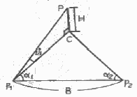
- 30.014m
- 31.940m
- 33.904m
- 34.189m
(정답률: 53%)
29. 지구의 물리측정에서 지자기의 방향과 자오선이 이루는 각을 무엇이라 하는가?
- 복각
- 수평각
- 편각
- 수직각
(정답률: 62%)
30. 축척 1:1500 도면상의 면적을 축척 1:1000으로 잘못알고 면적을 측정하여 24000m2를 얻었을 때 실제 면적은?
- 10667m2
- 36000m2
- 37500m2
- 54000m2
(정답률: 66%)
31. 그림과 같은 유토곡선(mass curve)에서 하향구간이 의미하는 것은?
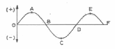
- 성토구간
- 절토구간
- 운반토량
- 운반거리
(정답률: 71%)
32. 직사각형의 두변의 길이를 1/1000 정밀도로 관측하여 면적을 산출할 경우 산출된 면적의 정밀도는?
- 1/500
- 1/1000
- 1/2000
- 1/3000
(정답률: 66%)
33. 종단면도에 표기하여야 하는 사항으로 옳지 않은 것은?
- 흙깍기 토량과 흙쌓기 토량
- 기울기
- 거리 및 누가거리
- 지반고 및 계획고
(정답률: 66%)
34. 트래버스 측점 A의 좌표가 (200, 200)이고, AB측선의 길이가 100m일 때 B점의 좌표는? (단, AB의 방위각은 195˚ 이고, 좌표의 단위는 m 이다.)
- (-96.6, -25.9)
- (-25.9, -96.6)
- (103.4, 174.1)
- (174.1, 103.4)
(정답률: 66%)
35. 초점거리 150mm 사진기로 촬영고도 5250m에서 사진크기 23cm x 23cm 사진을 얻었다. 이 사진의 입체시 모델에서 좌측 사진에 의한 기선장은 103mm, 우측 사진에 의한 기선장은 104mm이었다면 사진의 종중복도는?
- 53%
- 55%
- 57%
- 59%
(정답률: 48%)
36. 도로시점에서 교점까지의 거리가 325.18m이고 곡선의 반지름이 150m, 교각이 42˚인 단곡선을 편각법으로 설치할 때, 시단현의 편각은? (단, 중심말뚝간격은 20m이다. )
- 1˚ 27´ 06´´
- 1˚ 54´ 36´´
- 2˚ 22´ 06´´
- 2˚ 49´ 36´´
(정답률: 44%)
37. M의 표고를 구하기 위하여 수준점(A, B, C)으로부터 고저측량을 실시하여 표와 같은 결과를 얻었다면 M의 표고는?
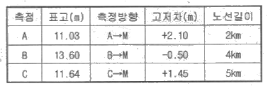
- 12.08m
- 12.11m
- 13.08m
- 13.11m
(정답률: 67%)
38. 하천에서 2점법으로 평균유속을 구할 경우 관측하여야 할 두 지점의 위치는?
- 수면으로부터 수심의 1/5 , 3/5 지점
- 수면으로부터 수심의 1/5 , 4/5 지점
- 수면으로부터 수심의 2/5 , 3/5 지점
- 수면으로부터 수심의 2/5 , 4/5 지점
(정답률: 66%)
39. 다각측량의 폐합오차 조정방법 중 트랜싯법칙에 대한 설명으로 옳은 것은?
- 각과 거리의 정밀도가 비슷할 때 실시하는 방법이다.
- 각 측선의 길이에 비례하여 폐합오차를 배분한다.
- 각 측선의 길이에 반비례하여 폐합오차를 배분한다.
- 거리보다는 각의 정밀도가 높을 때 활용하는 방법이다.
(정답률: 49%)
40. 어떤 측선의 길이를 3인(A, B, C)이 관측하여 아래와 같은 결과를 얻었을 때 최확값은?
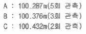
- 100.298m
- 100.312m
- 100.343m
- 100.376m
(정답률: 67%)
3과목: 수리학 및 수문학
41. 완경사 수로에서 배수곡선(M1)이 발생할 경우 각 수심간의 관계로 옳은 것은? (단, 흐름은 완경사의 상류흐름 조건이고, y: 측정수심, yn: 등류수심, yc: 한계수심)
- y>yn>yc
- y＜yn＜yc
- y>yc>yn
- yn>y>yc
(정답률: 58%)
42. 물체의 공기 중 무게가 750N(75kg)이고 물속에서의 무게는 150N(kg)일 때 이 물체의 체적은? (단, 무게 1kg=10N)
- 0.⑤m3
- 0.06m3
- 0.50m3
- 0.60m3
(정답률: 39%)
43. 구형물체(球形物體)에 대하여 stokes의 법칙이 적용되는 범위에서 항력계수(CD)는? (단, Re : Reynolds 수)
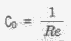
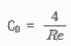
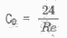
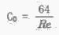
(정답률: 45%)
44. 그림과 같은 수압기에서 B점의 원통의 무게가 2000N(200kg), 면적이 500cm2이고 A점의 원통의 면적이 25cm2이라면, 이들이 평형상태를 유지하기 위한 힘 P의 크기는? (단, A점의 원통 무게는 무시하고 관내 액체의 비중은 0.9이며, 무게 1kg=10N 이다.)
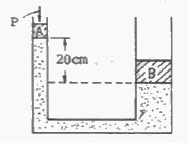
- 0.0955N(9.55g)
- 0.955N(95.5g)
- 95.5N(9.55kg)
- 955N(95.5kg)
(정답률: 52%)
45. 그림과 같은 유역(12㎞ x 8㎞)의 평균강우량을 Thiessen방법으로 구한 값은? (단, 1, 2, 3, 4번 관측점의 강우량은 각각 140, 130, 110, 100mm이며, 작은 사각형은 2㎞ x 2㎞의 정4각형으로서 모두 크기가 동일하다. )
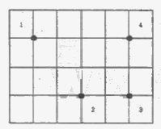
- 120mm
- 123mm
- 125mm
- 130mm
(정답률: 54%)
46. 지름 2m인 원형 수조의 측벽 하단부에 지름 50mm의 오리피스가 설치되어 있다. 오리피스 중심으로부터 수위를 50cm로 유지하기 위하여 수조에 공급해야할 유량은? (단, 유출구의 유량계수는 0.75 이다. )
- 7.61L/sec
- 6.61L/sec
- 5.61L/sec
- 4.61L/sec
(정답률: 47%)
47. 직각 삼각형 위어에서 월류수심의 측정에 1%의 오차가 있다고 하면 유량에 발생하는 오차는?
- 0.4%
- 0.8%
- 1.5%
- 2.5%
(정답률: 54%)
48. Darcy의 법칙(V=KI)에 대한 설명으로 옳은 것은?
- 정상류의 흐름에서는 층류와 난류에 상관없이 식을 적용할 수 있다.
- V는 동수경사와는 관계없이 흙의 특성에 좌우된다.
- K의 차원은 [LT]이면 단위는 [darcy]로도 표시한다.
- K는 투수계수이며 흙입자의 모양 및 크기, 유체의 점성 등에 의해 변화한다.
(정답률: 58%)
49. 대기의온도 t1, 상대습도 70%인 상태에서 증발이 진행되었다. 온도가 t2로 상승하고 대기 중의 증기압이 20% 증가하였다면 온도 t1 및 t2에서의 포화 증기압이 각각 10.0mmHg 및 14.0mmHg라 할 때 온도 t2에서의 상대습도는 약 얼마인가?
- 50%
- 60%
- 70%
- 80%
(정답률: 52%)
50. 단위 유량도 작성시 필요없는 사항은?
- 직접유출량
- 유효우량의 지속시간
- 유역면적
- 투수계수
(정답률: 66%)
51. 그림과 같이 유량이 Q, 유속이 V인 유관이 받는 외력 중에서 y축 방향의 힘(Fy)에 대한 계산식으로 옳은 것은? (단, p : 단위밀도, θ1 및 θ1≤90˚ , 마찰력은 무시함)
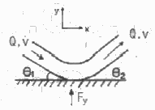
- Fy=pQV(sinθ2－sinθ1)
- Fy=-pQV(sinθ2－sinθ1)
- Fy=pQV(sinθ2＋sinθ1)
- Fy=-QV(sinθ2＋sinθ1)/p
(정답률: 48%)
52. 원형 댐의 월류량이 400m3/sec 이고 수문을 개방하는데 필요한 시간이 40초라 할 때 1/50 모형(模形)에서의 유량과 개방 시간은? (단, gr은 1로 가정한다. )
- Qm=0.0226m3/sec, Tm=5.657sec
- Qm=1.6232m3/sec, Tm=0.825sec
- Qm=56.560m3/sec, Tm=0.825sec
- Qm=115.00m3/sec, Tm=5.657sec
(정답률: 50%)
53. 폭 5m인 직사각형 수로에 유량 8m3/sec가 80㎝의 수심으로 흐를 때, Froude 수는?
- 0.26
- 0.71
- 1.42
- 2.11
(정답률: 59%)
54. 유출에 대한 설명 중 틀린 것은?
- 직접유출은 강수 후 비교적 단시간 내에 하천으로 흘러 들어가는 부분을 말한다.
- 지표유하수(overland flow)가 하천에 도달한 후 다른 성분의 유출수와 합친 유수를 총 유출수라 한다.
- 총 유출은 통상 직접유출과 기저유출로 분류된다.
- 지하유출은 토양을 침투한 물이 지하수를 형성하는 것으로 총 유출량에는 고려되지 않는다.
(정답률: 60%)
55. 그림과 같은 굴착정(artesian well)의 유량을 구하는 공식은? (단, R:영향원의 반지름, m:피압대수층의 두께, K:투수계수)
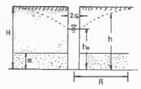
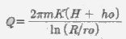
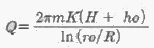
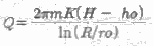
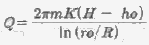
(정답률: 62%)
56. DAD(Depth-area-duration)해석에 관한 설명 중 옳은 것은?
- 최대 평균 우량깊이, 유역면적, 강우강도와의 관계를 수립하는 작업이다.
- 유역면적을 대수축(logarithmic scale)에 최대평균강우량을 산술축((arithmetic scale)에 표시한다.
- DAD 해석시 상대습도 자료가 필요하다.
- 유역면적과 증발산량과의 관계를 알 수 있다.
(정답률: 47%)
57. 개수로에서 도수가 발생할 때 도수 전의 수심이 0.5m 유속이 7m/sec 이면 도수 후의 수심은?
- 2.5m
- 2.0m
- 1.8m
- 1.5m
(정답률: 49%)
58. 물이 단면적, 수로의 재료 및 동수경사가 동일한 정사각형관과 원관을 가득차서 흐를 때 유량비
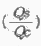
는? (단, Qs : 정사각형관의 유량, Qc : 원관의 유량, Manning 공식을 적용)- 0.645
- 0.923
- 1.083
- 1.341
(정답률: 42%)
59. 그림에서 A점(관내)에서의 압력에 대한 설명으로 옳은 것은? (단, B점은 수면에 위치)
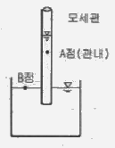
- B점에서의 압력보다 낮다.
- B점에서의 압력보다 높다.
- B점에서의 압력과 같다.
- B정에서의 압력과 비교할 수가 없다.
(정답률: 39%)
60. 에너지 보정계수(α)와 운동량 보정계수(β)에 대한 설명으로 옳지 않은 것은?
- α는 속도수두를 보정하기 위한 무차원 상수이다.
- β는 운동량을 보정하기 위한 무차원 상수이다.
- 실제유체 흐름에서는 β>α>1 이다.
- 이상 유체에서는 α = β = 1 이다.
(정답률: 54%)
4과목: 철근콘크리트 및 강구조
61. bw=350mm, d=600mm인 단철근 직사각형보에서 콘크리트가 부담할 수 있는 공칭 전단 강도를 정밀식으로 구하면 약 얼마인가? (단, Vu=100kN, Mu=300kNㆍm, ρw=0.016, fcκ=24MPa)
- 164.2kN
- 71.5kN
- 176.4kN
- 182.7kN
(정답률: 43%)
62. 복철근 콘크리트 단면에 인장철근비는 0.02, 압축철근비는 0.01 이 배근된 경우 순간처짐이 20mm일 때 6개월이 지난 후 총 처짐량은? (단, 작용하는 하중은 지속하중이며 저속하중의 6개월 재하기간에 따르는 계수 ξ는 1.2 이다. )
- 26mm
- 36mm
- 48mm
- 68mm
(정답률: 64%)
63. 강도설계법에서 강도감소계수를 사용하는 이유에 대한 설명으로 틀린 것은?
- 재료의 공칭강도와 실제 강도와의 차이를 고려하기 위해
- 부재를 제작 또는 시공할 때 설계도와의 차이를 고려하기 위해
- 하중의 공칭값과 실제 하중 사이의 불가피한 차이를 고려하기 위해
- 부재 강도의 추정과 해석에 관련된 불확실성을 고려하기 위해
(정답률: 47%)
64. 그림과 같은 정사각형 확대 기초에서 2방향 작용의 전단을 고려할 때 위험단면에서의 최대 전단력은? (단, 지반의 허용지지력은 171kN/m2, 기초판의 유효높이 d=520mm, 그림에서 치수의 단위는 mm이고, 기초의 자중은 무시한다. )
- 482.5kN
- 775.9kN
- 1666.4kN
- 1862.2kN
(정답률: 48%)
65. 철근콘크리트 부재에서 전단철근이 부담해야할 전단력이 300kN일 때 부재축에 직각으로 배치된 전단철근의 최대간격으로 옳은 것은? (단, 간격(s)내의 전단철근의 단면적 Av=700mm2, fy=350MPa, fcκ=28MPa, bw=400㎜, d=560㎜)
- 560㎜
- 419㎜
- 280㎜
- 140㎜
(정답률: 42%)
66. 나선철근 압축부재 단면의 심부지름이 400㎜, 기둥단면 지름이 500㎜ 인 나선철근 기둥의 나선철근비는 최소 얼마 이상이어야 하는가? (단, 나선철근의 설계기준항복강도(fyt)=400MPa, fcκ=21MPa)
- 0.013
- 0.02
- 0.025
- 0.03
(정답률: 39%)
67. 부분 프리스트레싱(partial prestressing)에 대한 설명으로 옳은 것은?
- 구조물에 부분적으로 PSC 부재를 사용하는 방법
- 부재단면의 일부에만 프리스트레스를 도입하는 방법
- 사용하중 작용시 PSC부재 단면의 일부에 인장응력이 생기는 것을 허용하는 방법
- PSC부재 설계시 부재 하단에만 프리스트레스를 주고 부재 상단에는 프리스트레스 하지 않는 방법
(정답률: 59%)
68. 그림의 단순지지 보에서 긴장재는 C점에 150㎜의 편차에 직선으로 배치되고, 1000kN 으로 긴장되었다. 보의 고정하중은 무시할 때 C점에서의 휨 모멘트는 얼마인가? (단, 긴장재의 경사가 수평압축력에 미치는 영향 및 자중은 무시한다. )
- Mc=90kNㆍm
- Mc=-150kNㆍm
- Mc=240kNㆍm
- Mc=390kNㆍm
(정답률: 50%)
69. 다음은 L형강에서 인장응력 검토를 위한 순폭계산에 대한 설명이다. 틀린 것은?
- 전개 총폭(b)=b1＋b2-t이다.
- 경우 순폭(bn)= b-d이다.
- 리벳선간거리(g)=g1-t이다.
- 인 경우 순폭(bn)-b-d-p2/4g이다.
(정답률: 60%)
70. 그림과 같은 용접부에 작용하는 응력은?
- 112.7MPa
- 118.0MPa
- 120.3MPa
- 125.0MPa
(정답률: 65%)
71. 철근콘크리트 강도설계에 있어서 안전을 위한 강도감소계수 Ø의 규정값으로 틀린 것은?
- 인장지배단면 : 0.85
- 전단력과 비틀림모멘트 : 0.75
- 콘크리트의 지압력 : 0.65
- 압축지배단면 중 나선철근으로 보강된 부재 : 0.80
(정답률: 54%)
72. 철근콘크리트 구조물에서 연속 휨부재의 부모멘트 재분배를 하는 방법에 대한 다음 설명 중 틀린 것은?
- 근사해법에 의하여 휨모멘트를 계산한 경우에는 연속휨부재의 부모멘트 재분배를 할 수 없다.
- 휨모멘트를 감소시킬 단면에서 최외단 인장철근의 순인장변형률 εt가 0.0075 이상인 경우에만 가능하다.
- 경간내의 단면에 대한 휨모멘트의 계산은 수정된 부모멘트를 사용하여야 한다.
- 재분배량은 산정된 부모멘트의 이다.
(정답률: 50%)
73. 부재의 최대모멘트 Ma와 균열모멘트 Mcr의 비(Me/Mcr)가 0.95인 단순보의 순간처짐을 구하려고 할 때 사용되는 유효단면2차모멘트(Ie)의 값은? (단, 철근을 무시한 중립축에 대한 총단면의 단면2차모멘트는 Ig=540000㎝4이고, 균열 단면의 단면2차모멘트 Icr=345080㎝4이다. )
- 200738㎝4
- 345080㎝4
- 540000㎝4
- 570724㎝4
(정답률: 56%)
74. 직사각형 단면의 보에서 계수 전단력 Vu=36kN을 콘크리트만으로 지지하고자 할 때 필요한 최소의 bwd는 얼마인가? (단, fcκ=25MPa)
- 54270mm2
- 85460mm2
- 110230mm2
- 115200mm2
(정답률: 57%)
75. 옹벽의 구조해석에 대한 설명으로 틀린 것은?
- 저판의 뒷굽판은 정확한 방법이 사용되지 않는 한, 뒷굽판 상부에 재하되는 모든 하중을 지지하도록 설계하여야 한다.
- 부벽식 옹벽의 추가철근은 2변 지지된 1방향 슬래브로 설계하여야 한다.
- 캔틸레버식 옹벽의 저판은 추가철근과의 접합부를 고정단으로 간주한 캔틸레버로 가정하여 단면을 설계할 수 있다.
- 뒷부벽은 T형보로 설계하여야 하며, 앞부벽은 직사각형보로 설계하여야 한다.
(정답률: 54%)
76. 철근의 겹침이음에서 A급 이음의 조건에 대한 설명으로 옳은 것은?
- 배근된 철근량이 이음부 전체 구간에서 해석결과 요구되는 소요철근량의 2배 이상이고 소요 겹침이음길이 내 겹침이음된 철근량이 전체 철근량의 1/2 이하인 경우
- 배근된 철근량이 이음부 전체 구간에서 해석결과 요구되는 소요철근량의 1.5배 이상이고 소요 겹침이음길이 내 겹침이음된 철근량이 전체 철근량의 1/2 이상인 경우
- 배근된 철근량이 이음부 전체 구간에서 해석결과 요구되는 소요철근량의 2배 이상이고 소요 겹침이음길이 내 겹침이음된 철근량이 전체 철근량의 1/3 이하인 경우
- 배근된 철근량이 이음부 전체 구간에서 해석결과 요구되는 소요철근량의 1.5배 이상이고 소요 겹침이음길이 내 겹침이음된 철근량이 전체 철근량의 1/3 이상인 경우
(정답률: 54%)
77. 프리스트레스의 손실 원인 중 프리스트레스 도입 후 시간이 경과 함에 따라서 생기는 것은 어느 것인가?
- 콘크리트의 탄성수축
- 콘크리트의 크리프
- PS 강재와 쉬스의 마찰
- 정착단의 활동
(정답률: 62%)
78. 복철근 직사각형보에서 다음 주어진 조건에 대하여 등가압축응력의 깊이 a는 약 얼마인가? (단, bw=350㎜, d=550㎜, As=1935mm2, As´=860mm2, fcκ=21MPa, fy=300MPa)
- 39㎜
- 45㎜
- 52㎜
- 64㎜
(정답률: 59%)
79. bw=300㎜, d=450㎜인 단철근 직사각형 보의 균형철근량은 약 얼마인가? (단, fcκ=35MPa, fy=300MPa이다.)
- 7590mm2
- 7320mm2
- 7150mm2
- 7010mm2
(정답률: 56%)
80. 철근콘크리트 기둥의 연결부에서 단면치수가 변하는 경우 옵셋 굽힘철근을 배근하여야 하는데 이 옵셋 굽힘철근 사용에 대한 다음 설명 중 틀린 것은?
- 옵셋 굽힘철근의 굽힘부에서 기울기는 1/6을 초과하지 않아야 한다.
- 옵셋 굽힘철근의 굽힘부를 벗어난 상ㆍ하부 철근은 기둥 축에 평행하여야 한다.
- 옵셋 굽힘철근의 굽힘부에는 띠철근 등으로 수평지지를 하여야 하는데 이때 수평지지는 굽힘부에서 계산된 수평분력의 2.0배를 지지할 수 있도록 설계되어야 한다.
- 기둥연결부에서 상ㆍ하부의 기둥면이 75㎜ 이상 차이가 나는 경우는 축방향 철근을 구부려서 옵셋 굽힘철근으로 사용하여서는 안 된다.
(정답률: 38%)
5과목: 토질 및 기초
81. 흙의 종류에 따른 아래 그림과 같은 다짐곡선에서 해당하는 흙의 종류로 옳은 것은?
- ⓐ : ML, ⓒ : SM
- ⓐ : SW, ⓓ : CL
- ⓑ : MH, ⓓ : GM
- ⓑ : GC, ⓒ : CH
(정답률: 59%)
82. 함수비 14%의 흙 2218g이 있다. 이 흙의 함수비를 23%로 하려면 몇g의 물이 필요한가?
- 199.6g
- 187.3g
- 175.1g
- 251.2g
(정답률: 49%)
83. 연약지반 처리공법중 sand drain 공법에서 연직과 방사선방향을 고려한 평균 압밀도 U는? (단, Uv=0.20, UR=0.71이다.)
- 0.573
- 0.697
- 0.712
- 0.768
(정답률: 51%)
84. 어떤 지반에 대한 토질시험결과 점착력 c=0.50kg/cm2, 흙의 단위중량 r=2.0t/m3이었다. 그 지반에 연직으로 7m를 굴착했다면 안전율은 얼마인가? (단, Ø=0 이다. )
- 1.43
- 1.51
- 2.11
- 2.61
(정답률: 49%)
85. 압밀에 관련된 설명으로 잘못된 것은?
- e-log P 곡선은 압밀침하량을 구하는데 사용된다.
- 압밀이 진행됨에 따라 전단강도가 증가한다.
- 교란된 지반이 교란되지 않은 지반보다 더 빠른 속도로 압밀이 진행된다.
- 압밀도가 증가해감에 따라 과잉간극수가 소산된다.
(정답률: 45%)
86. 다음은 정규압밀점토의 삼축압축 시험결과를 나타낸 것이다. 파괴시의 전단응력 τ와 수직응력 σ를 구하면?
- τ=1.73t/m2, σ=2.50t/m2
- τ=1.41t/m2, σ=3.00t/m2
- τ=1.41t/m2, σ=2.50t/m2
- τ=1.73t/m2, σ=3.00t/m2
(정답률: 51%)
87. 어느 모래층의 간극률이 35%, 비중이 2.66 이다. 이 모래의 Quick Sand에 대한 한계동수구배는 얼마인가?
- 1.14
- 1.08
- 1.0
- 0.99
(정답률: 56%)
88. 그림과 같이 지표면에서 2m부분이 지하수위이고, e=0.6, Gs=2.68 이고 지표면까지 모관현상에 의하여 100% 포화되었다고 가정하였을 때 A점에 작용하는 유효응력의 크기는 얼마인가?
- 7.2t/m2
- 6.7t/m2
- 6.2t/m2
- 5.7t/m2
(정답률: 29%)
89. 높이 15cm, 지름 10cm인 모래시료에 정수위 투수 시험한 결과 정수두 30cm로 하여 10초간의 유출량이 62.8cm3이었다. 이 시료의 투수계수는?
- 8 x 10-2cm/sec
- 8 x 10-3cm/sec
- 4 x 10-2cm/sec
- 4 x 10-3cm/sec
(정답률: 44%)
90. 어떤 모래의 건조단위중량이 1.7t/m3이고, 이 모래의 rdmax = 1.8t/m3 , rdmin = 1.6t/m3이라면, 상대밀도는?
- 47%
- 49%
- 51%
- 53%
(정답률: 54%)
91. 연약점성토층을 관통하여 철근콘크리트 파일을 박았을때 부마찰력(Negative friction)은? (단, 이때 지반의 일축압축강도 qu=2t/m2, 파일직경 D=50cm, 관입깊이 ℓ=10m 이다. )
- 15.71t
- 18.53t
- 20.82t
- 24.24t
(정답률: 45%)
92. 포화 점토에 대해 베인전단시험을 실시하였다. 베인의 직경과 높이는 각각 7.5cm와 15cm이고 시험 중 사용한 최대 회전모멘트는 250kgㆍcm이다. 점성토의 액성한계는 65%이고 소성한계는 30%이다. 설계에 이용할 수 있도록 수정비배수 강도를 구하면? (단, 수정계수(μ)=1.7-0.54log(PI)를 사용하고, 여기서, PI는 소성지수이다. )
- 0.8t/m2
- 1.40t/m2
- 1.82t/m2
- 2.0t/m2
(정답률: 37%)
93. 다음 그림과 같은 점성토 지반의 굴착저면에서 바닥융기에 대한 안전율을 Terzaghi의 식에 의해 구하면? (단, r=1.731t/m3 , c=2.4t/m2 이다. )
- 3.21
- 2.32
- 1.64
- 1.17
(정답률: 41%)
94. 모래치환법에 의한 흙의 들밀도 시험결과, 시험구멍에서 파낸 흙의 중량 및 함수비는 각각 1800g, 30%이고, 이 시험구멍에 단위중량이 1.35g/cm3인 표준모래를 채우는데 1350g이 소요되었다. 현장 흙의 건조단위중량은?
- 0.93g/cm3
- 1.03g/cm3
- 1.38g/cm3
- 1.53g/cm3
(정답률: 42%)
95. 정규압밀점토에 대하여 구속응력 1kg/cm2로 압밀배수 시험한 결과 파괴시 축차응력이 2kg/cm2이었다. 이 흙의 내부마찰각은?
- 20˚
- 25˚
- 30˚
- 45˚
(정답률: 54%)
96. 다음 그림의 파괴포락선 중에서 완전포화된 점토를 UU(비압밀 비배수)시험했을 때 생기는 파괴포락선은?
- ①
- ②
- ③
- ④
(정답률: 53%)
97. 표준관입시험(SPT)을 할 때 처음 15cm 관입에 요하는 N값은 제외하고, 그 후 30cm 관입에 요하는 타격수로 N값을 구한다. 그 이유로 가장 타당한 것은?
- 정확히 30cm를 관입시키기가 어려워서 15cm 관입에 요하는 N값을 제외한다.
- 보링구멍 밑면 흙이 보링에 의하여 흐트러져 15cm 관입후부터 N값을 측정한다.
- 관입봉의 길이가 정확히 45cm이므로 이에 맞도록 관입시키기 위함이다.
- 흙은 보통 15cm 밑부터 그 흙의 성질을 가장 잘 나타낸다.
(정답률: 54%)
98. 다음 중 직접기초의 지지력 감소요인으로서 적당하지 않은 것은?
- 편심하중
- 경사하중
- 부마찰력
- 지하수위의 상승
(정답률: 41%)
99. 강도정수가 c=0, Ø=40˚ 인 사질토 지반에서 Rankine 이론에 의한 수동토압계수는 주동토압계수의 몇 배인가?
- 4.6
- 9.0
- 12.3
- 21.1
(정답률: 48%)
100. 아래 그림에서 투수계수 K = 4.8 X 10-3cm/sec 일 때 Darcy 유출속도 v 와 실제 물의 속도(침투속도) vs 는?
- v=3.4×10-4cm/sec, vs=5.6×10-4cm/sec
- v=3.4×10-4cm/sec, vs=9.4×10-4cm/sec
- v=5.8×10-4cm.sec, vs=10.8×10-4cm/sec
- v=5.8×10-4cm/sec, vs=13.2×10-4cm/sec
(정답률: 50%)
6과목: 상하수도공학
101. 효율이 0.8인 펌프 2대를 이용하여 취수탑에서 100000m3/일의 수량을 20m 높이에 있는 도수로에 끌어올리려 한다. 펌프 한 대의 소요동력은?
- 90.6kw
- 113.2kw
- 141.5kw
- 283.0kw
(정답률: 55%)
102. 침전지의 수심이 4m이고 체류시간이 2시간일 때 이 침전지의 표면부하율(Surface loading rate)은?
- 12m3/m2·day
- 24m3/m2·day
- 36m3/m2·day
- 48m3/m2·day
(정답률: 50%)
103. 하수도 계획 중 계획우수량 산정시 확률년수는 몇 년을 원칙으로 하는가?
- 5~10년
- 10~20년
- 25~30년
- 30~40년
(정답률: 67%)
104. 유입 하수량 20000m3/day, 폭기조 유입수의 BOD 농도를 140mg/L, BOD제거율을 90%로 할 경우 송기량은? (단, 산소 1kg에 대해 필요한 공기량은 3.5m3이고 생화학적 반응에 이용되는 공기량은 공급량의 7%로 가정한다. )
- 116000m3/day
- 126000m3/day
- 136000m3/day
- 146000m3/day
(정답률: 41%)
1⑤. 하수도 시설 설계시 우수유출량의 산정을 합리식으로 할 때 토지이용도별 기초 유출계수의 표준값이 가장 작은 것은?
- 지붕
- 수면
- 경사가 급한 산지
- 잔디, 수목이 많은 공원
(정답률: 54%)
106. 물이 상수관망에서 한쪽 방향으로만 흐르도록 할 때 사용하는 밸브는?
- 공기밸브(air valve)
- 역지밸브(check valve)
- 배수밸브(drain valve)
- 안전밸브(safty valve)
(정답률: 58%)
107. 관거별 계획하수량에 대한 설명으로 옳지 않은 것은?
- 오수관거의 계획오수량은 계획1일최대오수량으로 한다.
- 우수관거에서는 계획우수량으로 한다.
- 합류식관거에서는 계획시간최대오수량에 계획우수량을 합한 것으로 한다.
- 차집관거는 우천시 계획오수량으로 한다.
(정답률: 55%)
108. 하수관거의 접합 중에서 굴착 깊이를 얕게 함으로 공사비용을 줄일 수 있으며, 수위상승을 방지하고 양정고를 줄일 수 있어 펌프로 배수하는 지역에 적합한 방법은?
- 관저 접합
- 관정 접합
- 수면 접합
- 관중심 접합
(정답률: 65%)
109. 정수 처리에서 염소소독을 실시할 경우 물이 산성일수록 살균력이 커지는 이유는?
- 수중의 OCI 증가
- 수중의 OCI 감소
- 수중의 HOCI 증가
- 수중의 HOCI 감소
(정답률: 59%)
110. 펌프의 회전수 N=3000rpm, 양수량 Q=1.5m3/min, 전양정 H=300m인 5단 원심펌프의 비회전도는 Ns는?
- 약 100회
- 약 150회
- 약 170회
- 약 210회
(정답률: 49%)
111. 슬러지 용적지수 (SVI)에 관한 설명 중 옳지 않은 것은?
- 폭기조 내 혼합물을 30분간 정치한 후 침강한 1g의 슬러지가 차지하는 부피(mL)로 나타낸다.
- 정상적으로 운전되는 폭기조의 SVI는 50~150 범위이다.
- SVI는 슬러지 밀도지수(SDI)에 100을 곱한 값을 의미한다.
- SVI는 폭기시간, BOD농도, 수온 등에 영향을 받는다.
(정답률: 58%)
112. 하수의 생물학적 처리법 중 산화구법(oxidation ditchprocess)이 속하는 처리법은?
- 산화지법
- 소화법
- 활성슬러지법
- 살수여상법
(정답률: 41%)
113. 펌프대수를 결정할 때 일반적인 고려사항에 대한 설명으로 옳지 않은 것은?
- 건설비를 절약하기 위해 예비는 가능한 대수를 적게하고 소용량으로 한다.
- 펌프의 설치대수는 유지관리상 가능한 적게 하고 동일용량의 것으로 한다.
- 펌프는 가능한 최고효율점 부근에서 운전하도록 대수 및 용량을 정한다.
- 펌프는 용량이 작을수록 효율이 높으므로 가능한 소용량의 것으로 한다.
(정답률: 61%)
114. 토사유입의 가능성이 높은 하천의 취수탑에 의한 취수시 취수구의 단면적을 결정하기 위한 유입속도는 얼마를 표준으로 하는가?
- 5~10cm/sec
- 15~30cm/sec
- 30~50cm/sec
- 1~2m/sec
(정답률: 49%)
115. 상수 취수시설에 있어서 침사지의 유효수심은 얼마를 표준으로 하는가?
- 10~12m
- 6~8m
- 3~4m
- 0.5~2m
(정답률: 55%)
116. 상수도 시설의 규모 결정에 기초가 되는 계획 1일 최대급수량이 20000m3이라 할 때 일반적인 계획취수량은 얼마 정도인가?
- 18000m3/day
- 22000m3/day
- 30000m3/day
- 40000m3/day
(정답률: 51%)
117. 상수도의 배수관 설계시에 사용하는 계획배수량은?
- 계획평균배수량
- 계획최소배수량
- 계획시간최대배수량
- 계획시간평균배수량
(정답률: 65%)
118. 공동현상(cavitation)의 방지책에 대한 설명으로 옳지 않은 것은?
- 마찰손실을 작게 한다.
- 펌프의 흡입관경을 작게 한다.
- 임펠러(impeller)속도를 작게 한다.
- 흡입수두를 작게 한다.
(정답률: 60%)
119. 상수도의 오염물질별 처리방법으로 옳은 것은?
- 트리할로메탄 - 마이크로스트레이너
- 철, 망간 제거 - 폭기법
- 색도유발물질 - 염소처리
- Cryptosporidium - 염소소독
(정답률: 41%)
120. 하수도시설의 일차침전지에 대한 설명으로 옳지 않은 것은?
- 침전지 형상은 원형, 직사각형 또는 정사각형으로 한다.
- 직사각형 침전지의 폭과 길이의 비는 1:3 이상으로 한다.
- 유효수심은 2.5~4m를 표준으로 한다.
- 침전시간은 계획1일 최대오수량에 대하여 일반적으로 12시간 정도로 한다.
(정답률: 53%)